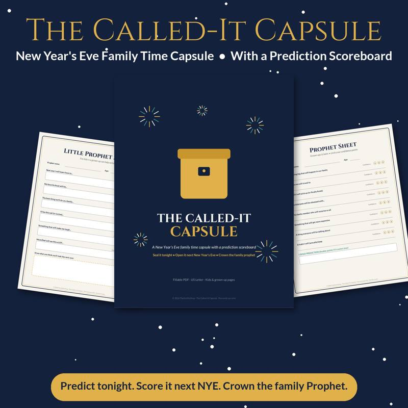

New Year's Eve Family Traditions Kids Will Love
New Year's Eve doesn't have to be a grown-up party. Families with kids can make the night just as memorable — maybe more so. The trick is to build traditions that kids look forward to every year, and to plan around bedtime so nobody melts down before the countdown.
Plan for an early countdown
Many young kids won't make it to midnight, and that's fine. A few options:
- Celebrate a time zone ahead. Count down with a city where it's already midnight.
- Record a countdown video. Stream a pre-recorded countdown at 8 pm.
- "Noon Year's Eve." Celebrate at noon with confetti and juice.
- Hourly countdowns. Each hour from 6 pm, celebrate a new "time zone" with a mini activity.
Traditions with a look back
Year in review
Gather around and share favorite moments from the year. Kids can draw pictures; older kids can write lists: best day, hardest moment, funniest memory, something they learned.
Photo slideshow
Pull together family photos from the year and watch them on the TV. Kids love seeing themselves.
Gratitude jar reading
If you kept a gratitude jar during the year, open it and read notes aloud.
Traditions with a look forward
Family time capsule
Each family member writes or draws answers to questions like: What's your favorite food right now? Who's your best friend? What do you want to learn next year? How tall are you? Seal everything in an envelope or box and open it next New Year's Eve. Kids find it hilarious to see what they said a year earlier.
Prediction game
Everyone predicts things about the coming year — will Dad learn to cook a new dish? Will the dog learn a trick? Who will lose a tooth first? Write predictions down, seal them, and score them next year.
Our Called It! New Year's Eve time capsule combines both: printable prediction cards, a family time capsule and a scoring sheet for next year's reveal.
Resolutions and goals
Keep it light for kids. Instead of "resolutions," call them "adventures" — places to visit, skills to learn, kind acts to do.
Traditions with a party feel
- Noisemakers and hats. Make DIY noisemakers with paper cups and beans.
- Balloon drop. Fill a sheet or net with balloons and release at countdown.
- Confetti poppers. Easy and kid-friendly.
- Dance party. Each family member picks a song from the year.
- Toast with sparkling juice. Fancy glasses make it feel special.
Games for New Year's Eve
- Board game tournament. Rotate games hourly.
- Family trivia about the year. Questions about trips, events and family moments.
- Minute-to-win-it challenges. Stack cups, move cotton balls with a spoon, bounce ping-pong balls into cups.
- Mystery game. For families with teens or for adult parties after the kids are asleep, a murder mystery party is a fun, interactive option. Our Masquerade New Year's Eve murder mystery has a 1920s masquerade theme built for the night.
Food traditions
- Appetizer dinner. Lots of small bites instead of a big meal.
- Make-your-own pizza. Each person builds their own.
- Fondue. Cheese or chocolate.
- Twelve grapes at midnight. A tradition from Spain: eat one grape at each chime for good luck.
- Breakfast for dinner. Pancakes and waffles.
Traditions from around the world
Teach kids about how different cultures celebrate:
- Spain: twelve grapes at midnight.
- Denmark: jumping off chairs at midnight to "leap" into the new year.
- Japan: many families eat soba noodles and visit shrines.
- Scotland: "first-footing," where the first visitor of the year brings a gift.
- Brazil: wearing white for peace.
Try one each year.
Quiet traditions
- New Year's Day walk. Start the year outside.
- Write letters to your future selves.
- Family pajama night. Matching pajamas, movies and popcorn.
Making traditions stick
- Keep it simple so it's easy to repeat.
- Take a photo of the same activity every year.
- Keep the time capsule and predictions in one box so you can compare over the years.
- Let kids help choose a new tradition each year.
New Year's Eve with kids can be one of the cozier holidays of the season. Pick two or three traditions, plan around bedtime and focus on fun. For more family ideas, see snow day activities for kids and our family chore system guide — a great "new year, new routines" project.

A family predictions game and time capsule to seal on New Year's Eve and open next year.
See it on Payhip
Shop the printables mentioned
Called It! New Year's Eve Time Capsule
A family predictions game and time capsule to seal on New Year's Eve and open next year.
View on PayhipMasquerade New Year's Eve Murder Mystery
A 1920s masquerade murder mystery party game for New Year's Eve.
View on PayhipMore guides
- Baby Shower Prediction Game Ideas (and How to Run Them)
- Bridal Shower Games That Aren't Cringe
- Chili Cook-Off Rules and Scoring: A Complete Host Guide
- Christmas Party Games for Adults (No Supplies Needed)
- Cookie Exchange Party Ideas: How to Host a Christmas Cookie Swap
- A Family Chore System That Actually Works
- Galentine's Party Games Your Friends Will Actually Love
- The Meal Planning Game: How to Get Your Family to Help Plan Dinners
- Snow Day Activities for Kids: 30 Ideas Indoors and Out
- Teacher Gift Ideas From the Whole Class (Thoughtful and Budget-Friendly)
- Thanksgiving Kids Table Activities That Keep Them Busy
- Ugly Sweater Contest Ideas: Categories, Judging and Fun Twists
- Vacation Rental Cleaning Checklist: Room-by-Room Turnover Guide
- Valentine's Escape Room for Couples at Home: How to Set One Up